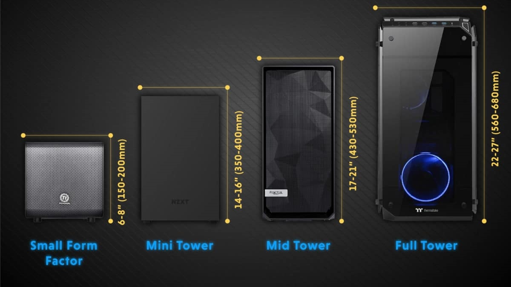
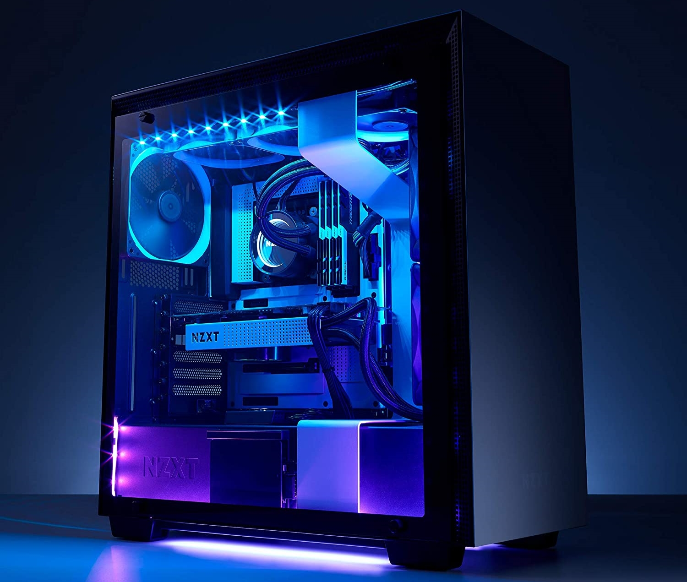

Case
Obvykle je skříň vyrobená z plechu (ocel, dural, hliník, karbon…), ale může být i z plastu a nebo jiných materiálů. Skříň má odnímatelné víko nebo boční stěny, které po odstranění odhalí samotné šasi. Šasi je kostra skříně s vytvořenými upevňovacími plochami a otvory, do kterých se připevňují všechny interní mechanické díly počítače.
Základem je plocha pro uložení základní desky patřičného rozměru. Obvykle je skříň univerzální pro jeden typ základní desky, například ATX a jeho varianty (micro ATX, ATX, DTX, mini ATX, flex ATX). Rozměry základní desky odpovídají rozmístění upevňovacích otvorů, otvorů v zadní stěně pro výstupní konektory, upevňovací lišty a pro rozšiřující karty. Obsahuje ovládací prvky (zapínací tlačítko, reset), indikační prvky (LED indikující zapnutí, LED indikující činnost disku) a rozšiřující konektory (USB, audio, FireWire) umístěné na čelním panelu skříně.Základem je plocha pro uložení základní desky patřičného rozměru. Obvykle je skříň univerzální pro jeden typ základní desky, například ATX a jeho varianty (micro ATX, ATX, DTX, mini ATX, flex ATX). Rozměry základní desky odpovídají rozmístění upevňovacích otvorů, otvorů v zadní stěně pro výstupní konektory, upevňovací lišty a pro rozšiřující karty. Obsahuje ovládací prvky (zapínací tlačítko, reset), indikační prvky (LED indikující zapnutí, LED indikující činnost disku) a rozšiřující konektory (USB, audio, FireWire) umístěné na čelním panelu skříně.

Další částí skříně je místo pro upevnění napájecího zdroje pro daný typ základní desky (např. zdroje ATX). Upevňovací otvory ve skříni odpovídají rozmístění upevňovacích otvorů ve zdroji.
Ve skříni se dále nacházejí místa pro upevnění standardních přídavných ventilátorů o rozměrech 8 až 12 cm. Některé skříně mají nadstandardní výbavu - měřiče teploty, přídavná chlazení, displeje či dekorativní osvětlení.
Tvar a rozměry
Skříně se vyrábějí v rozličných velikostech a pro různé typy základních desek. Z hlediska použití se skříně dělí na dva základní typy – „naležato“ (desktop) a „nastojato“ (tower).

- DESKTOP - Skříně "naležato" leží na své největší stěně a základní deska upevněná v takové skříni je ve své přirozené poloze v rovině. Nevýhodou těchto skříní je, že zabírají více místa a jsou málo oblíbené. Příklady takových skříní jsou skříně desktop, slim, booksize, desknote.

- TOWER - Skříně "nastojato" leží na své nejmenší stěně a tím zabírají nejméně místa. Výhodou je přirozené upevnění mechanik (jednoduché vkládání média do optické mechaniky). Nevýhodou je, že základní deska je umístěná svisle a tím přídavné karty leží vodorovně. Některé karty, které vyvíjejí největší teplo (AGP a PCIE grafické karty) jsou tím pádem umístěné chladičem dolu - dolu hlavou, což je z hlediska chlazení nejhorší možný stav, takže teplo se přirozeně drží pod chladičem a způsobuje přehřátí karet.Tyto skříně patří mezi nejoblíbenější. Příkladem je skříň tower, supertower, minitower, miditower, bigtower (tower skříně se liší počtem 5,25" šachtami a tím pádem výškou – miditower má obvykle 4 šachty), booksize nastojato.
Důležitým bodem je i design počítačové skříně. Skříně podléhají módním trendům a často vypadají jako umělecká díla. Je možné si zakoupit i umělecky dodělané skříně -různé malby, výřezy, podsvícení, doplňky, displaye, ovladače chlazení, teploměry, přídavné konektory… Okolo roku 2000 a před ním byla nejmódnější barva počítače a jeho doplňků (klávesnice, myš, tlačítek..) béžová – dnes převládá černá a stříbrná barva s barevnými doplňky. Individuálním úpravám vzhledu počítačových skříní se říká casemodding.